来源：https://fxx6d3i9bl.feishu.cn/docx/Ag0tdawI3o4Ho1x5jykcfk1TnOc
垂类视频+爆款的模式确实是有机会的。单店月利润区间为300w-330w。
这种视频+素人推广的模式确实能做，通过1天多条视频以及矩阵的形式效果比较好；与此同时，供应链把控确实很大程度决定了这款产品的产能以及低价，很考验供应链。
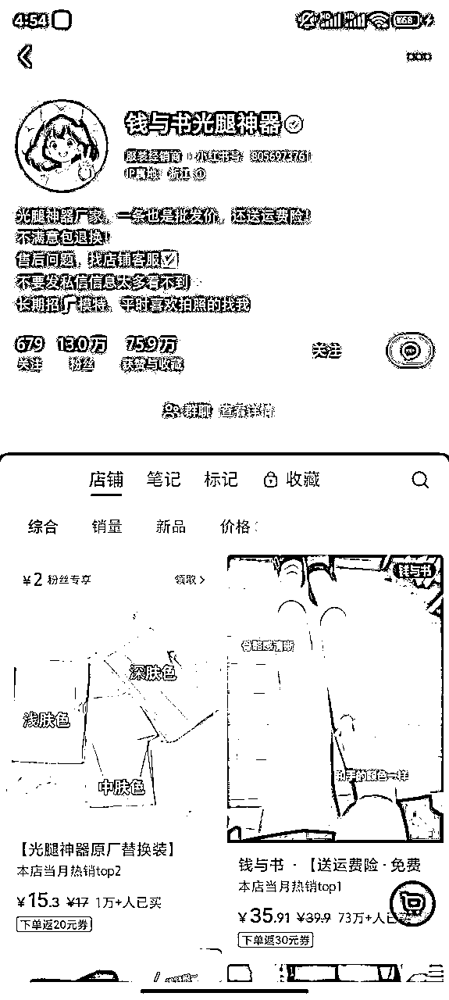
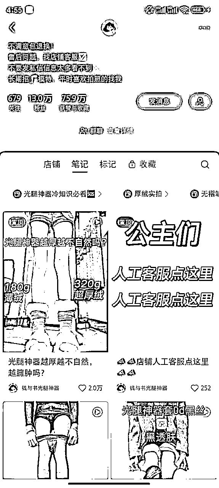
光腿神器，打底袜
小红书
选择该账号拆解的原因：
1）视频剪辑
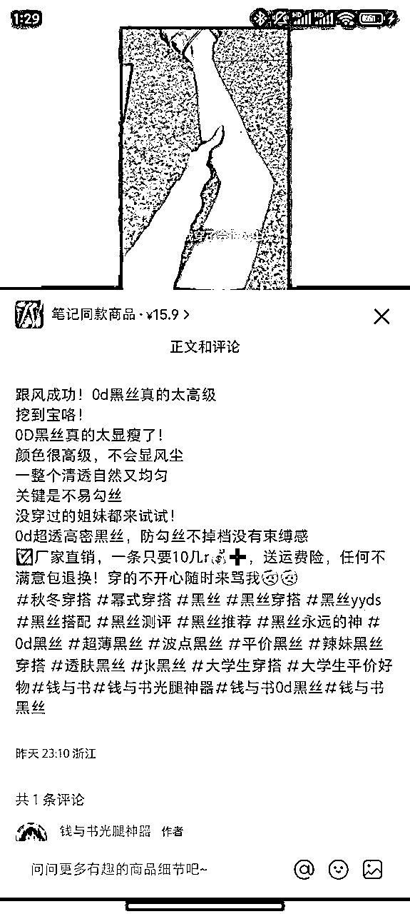
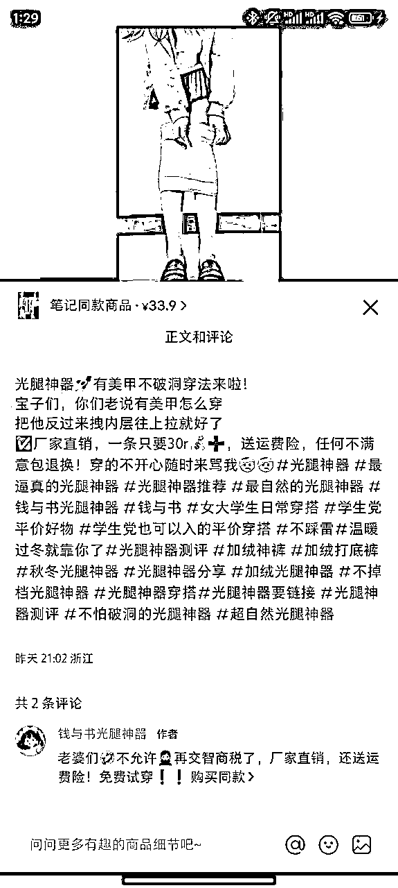
2）素人合作
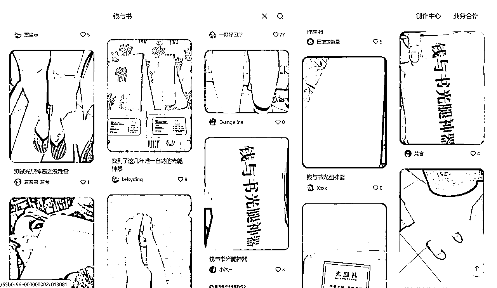
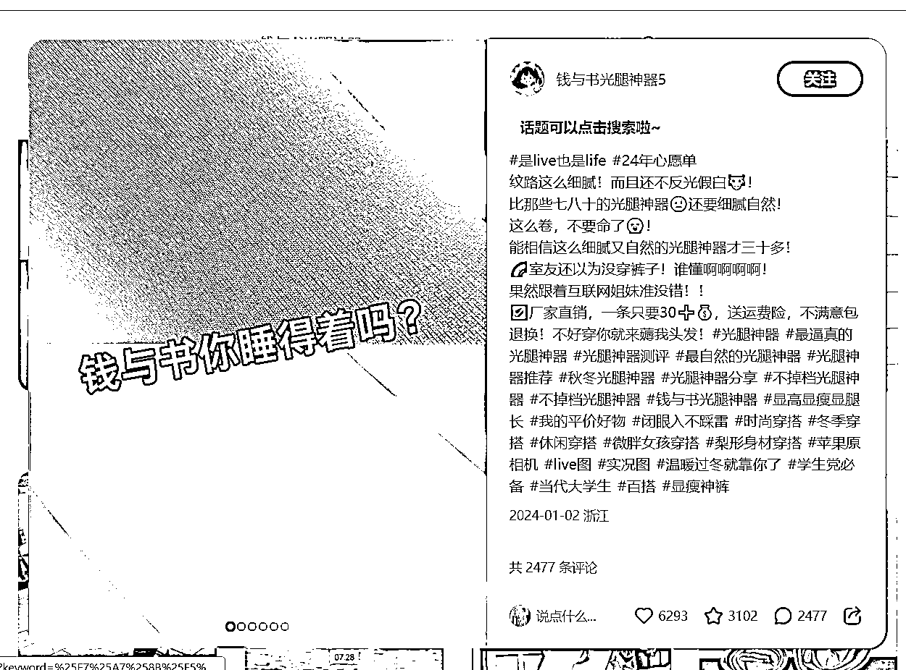
3）定价与优惠
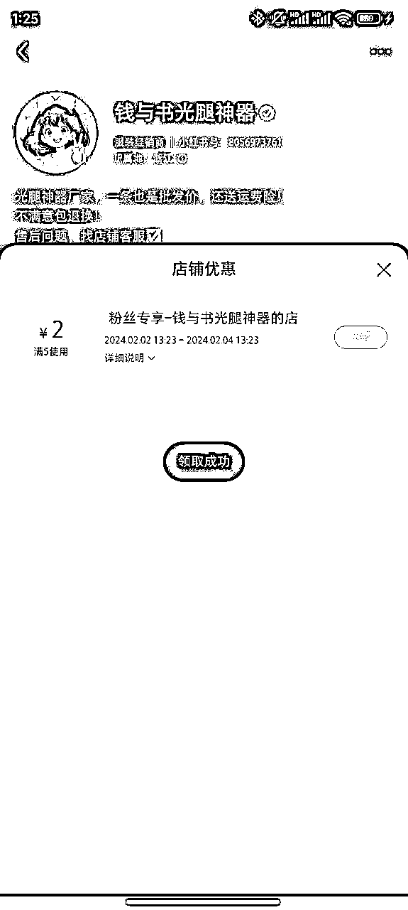
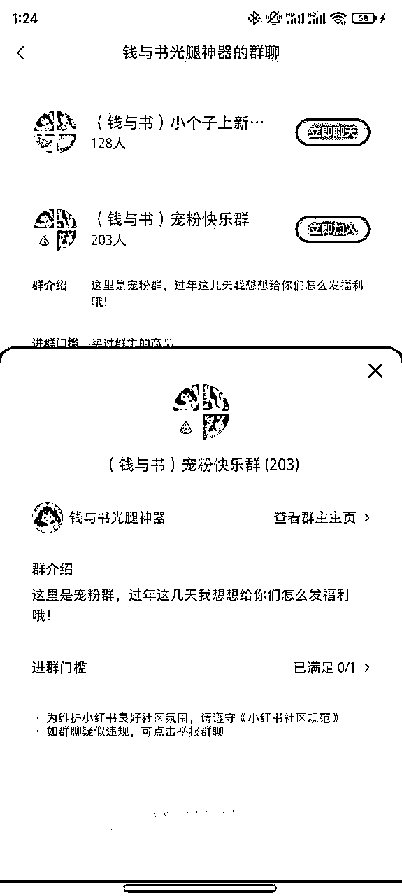
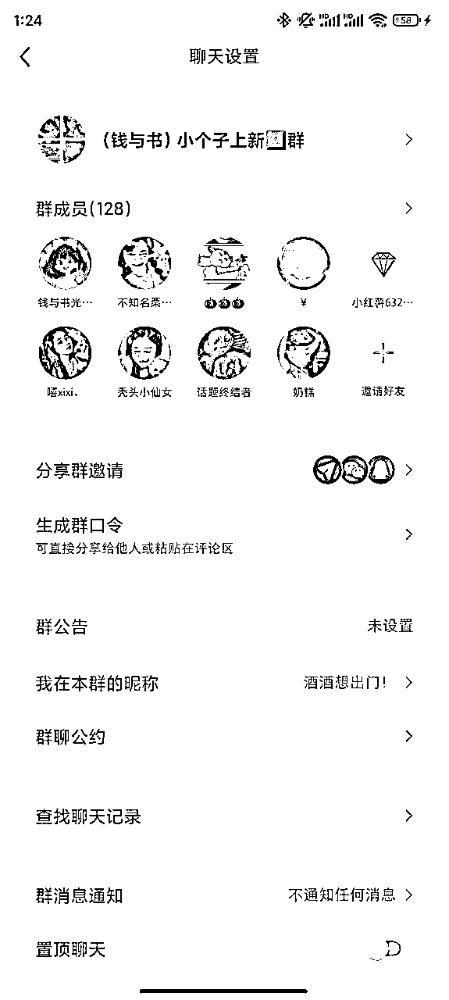
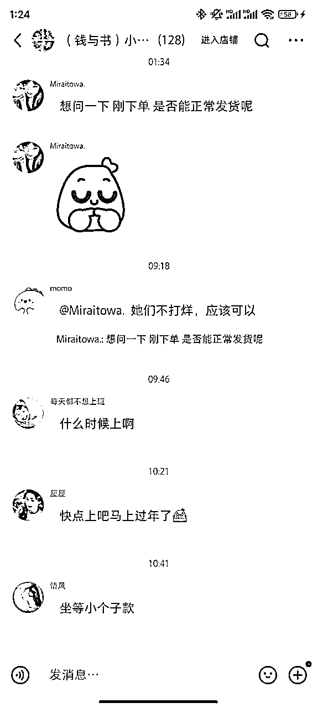
4）产品来源
光腿神器在1688上搜到最低价格12元左右，去掉活动福利，成交一单按30元客单算，利润有18元/单。
按照目前73w销量，利润在1314万，账号笔记最早时间是23年11月，按4个月时间算，每月利润有328.5万。
如果是真自有工厂，利润还有空间。
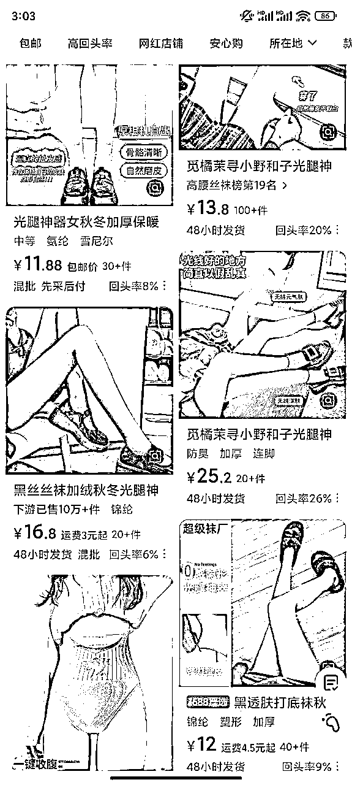
小红书店铺目前已经成功打造出爆款，同一家店铺其他平台搜索👇
淘宝👇
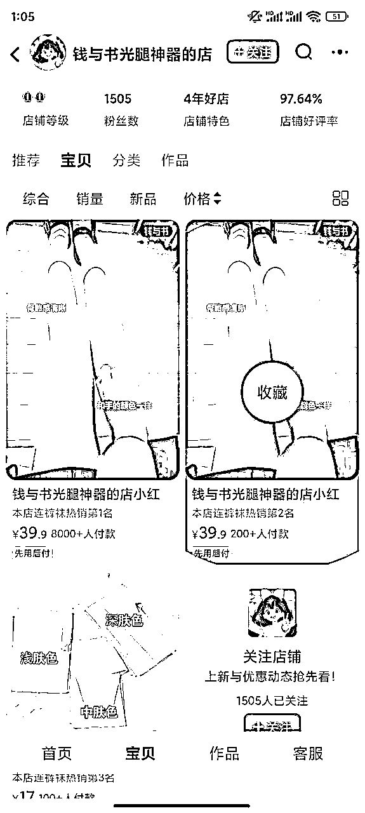
抖音👇
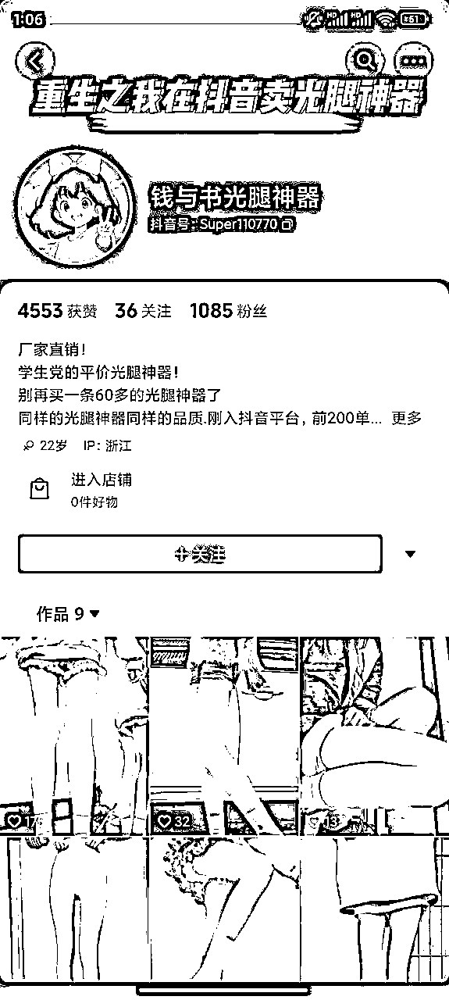
快手没有店铺，放大同个形式可以在快手以及闲鱼，价格定位相似，且同个形式量起来操作难度不高。